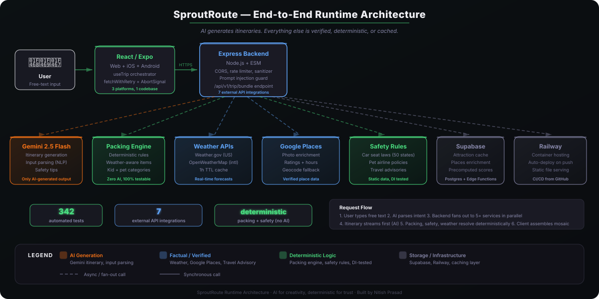
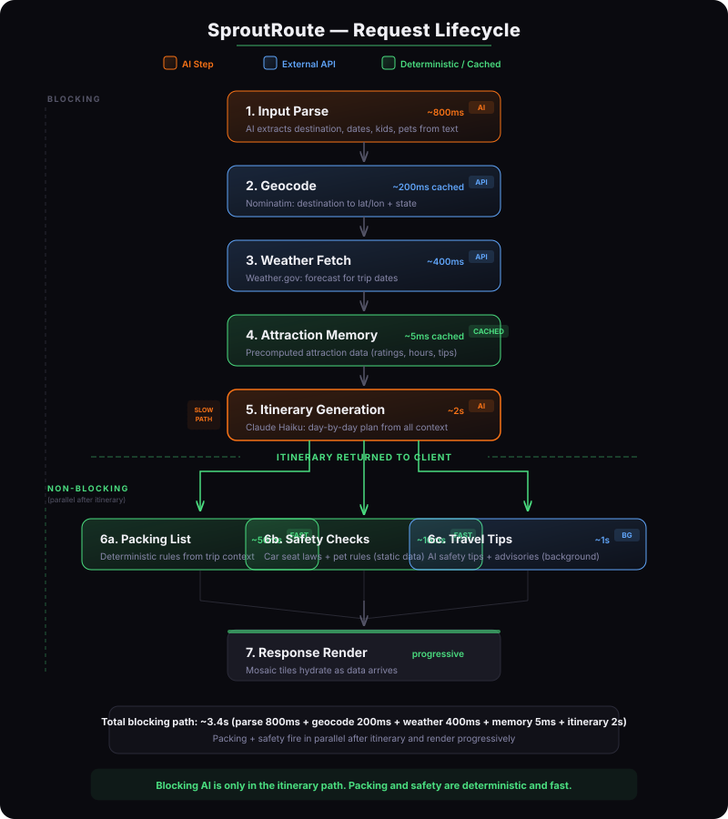
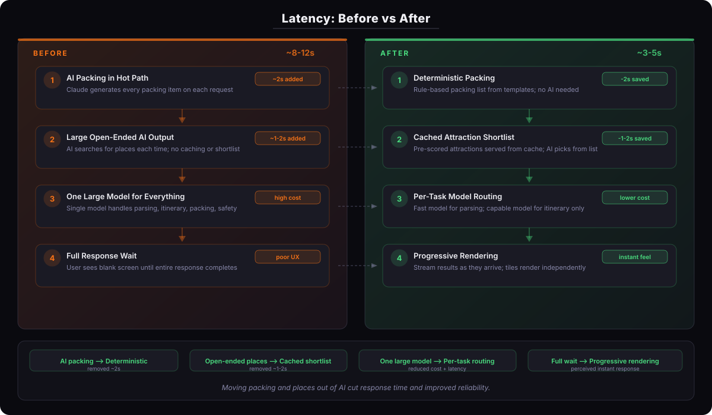
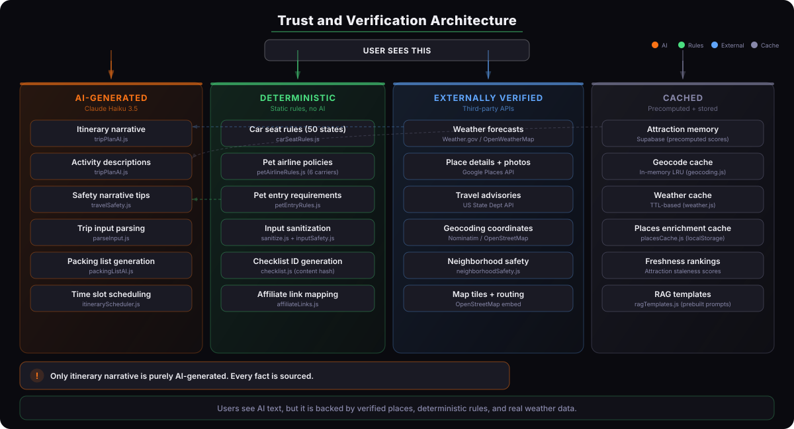
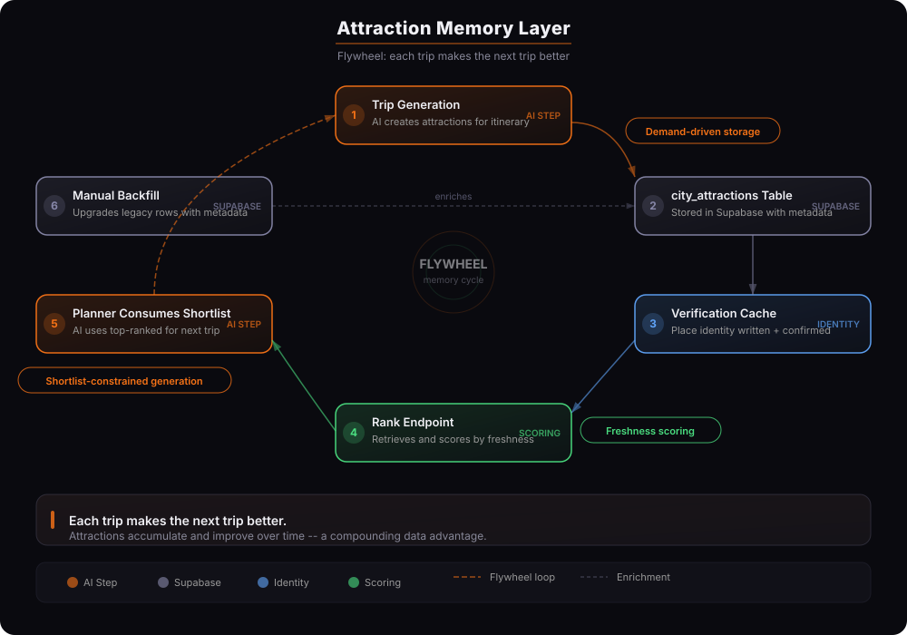

Fuzzy natural-language input
Users type free text like "beach trip with two toddlers next week." The system must extract destination, dates, children, pets, and travel mode from ambiguous input before any planning begins.
A hybrid AI travel planner that separates what AI should generate from what must be verified, deterministic, or cached. I defined the product, designed the system architecture, built the full stack, and operate the web app in production on Railway. The web stack uses attraction memory and verified data layers, while the native iOS app uses WeatherKit for forecast display.
Users type free text like "beach trip with two toddlers next week." The system must extract destination, dates, children, pets, and travel mode from ambiguous input before any planning begins.
Seven external services with different auth models, rate limits, response shapes, and outage patterns. Orchestrating them into one coherent response requires careful fallback and timeout design.
Weather, places, and safety data must be factual. Itinerary text can be generative. Mixing these creates hallucination risk. The architecture must enforce the boundary.
A trip plan touches geocoding, weather, AI generation, and enrichment. Serial execution meant 8-12 seconds. Cutting that required rethinking what could be parallelized, cached, or removed from the hot path.
Car seat laws, airline pet policies, and travel advisories are legal/safety data. They cannot be AI-generated. They must come from verified, deterministic sources with clear sourcing.
Attraction memory, saved preferences, and profile-aware planning require persistent storage, freshness scoring, and a strategy for what to precompute vs generate on demand.

Users describe their trip in free text. The system extracts destination, dates, family composition, and travel preferences.

Dates drive weather relevance, itinerary timing, and packing recommendations downstream.

Children's ages change itinerary constraints, car seat rules, and packing lists. Pets trigger airline and entry requirement checks.

Day-by-day plan with real places from Google Places, real weather from Weather.gov, and AI-generated narrative connecting them.

Packing lists are generated by rules, not AI. Weather, children's ages, pet presence, and trip duration drive the output deterministically.

Car seat laws from state data, travel advisories from State Dept, airline pet policies from carrier records. No AI hallucination.
Everything generated by a single AI call: itinerary, packing, safety narrative. Fast to ship, but slow, expensive, and unreliable. Packing lists hallucinated items. Safety text had no sourcing. Latency was 8-12 seconds.
Packing moved to a deterministic rules engine. Model routing assigned tasks to the right-sized model. Google Places verification replaced open-ended AI place suggestions. Latency dropped. Reliability improved.
Supabase stores verified attractions per city. Freshness scoring ranks them. The AI planner receives a shortlist, not open-ended search. Each trip enriches the data for the next trip. Profile-aware planning in progress.
The system did not arrive at V3 by planning ahead. Each stage solved a real problem discovered in production. V1 shipped fast but hallucinated. V2 fixed reliability but still had latency. V3 added memory to make each trip improve the next. This is the kind of architectural evolution that separates a demo from a real product.

Total response time: 8-12 seconds
Response time improved significantly. The remaining bottleneck is AI itinerary generation, which is inherently serial.


Changing the model alone was not enough. The latency problem was architectural: too many tasks in the serial path, AI doing work that deterministic logic could do faster and more reliably. The fix was restructuring what the AI is responsible for, not just making it faster.
Weather.gov for US forecasts and Visual Crossing for international forecasts in the web app. The native iOS app uses WeatherKit for forecast display. Real data with timestamps, not AI-generated predictions.
Every restaurant and attraction is a real place with ratings, photos, and opening hours from the Google Places API. No hallucinated venues.
Car seat laws from state-level legal data. Airline pet policies from carrier records. Travel advisories from the US State Department. No AI generation for safety-critical information.
Packing lists are built by rules that consider weather, trip duration, children's ages, and pet presence. Consistent, fast, and never hallucinates items.
The AI generates the itinerary narrative: connecting verified places into a coherent day-by-day plan with timing, transitions, and family-appropriate recommendations. It receives a shortlist of verified attractions, real weather data, and family constraints. The AI writes the story. The facts come from verified sources.

AI packing was creative but unreliable. A rules engine is faster, consistent, and never hallucinates "inflatable pool" for a city trip. Reliability beats novelty for a family product.
Input parsing needs speed, not depth. Itinerary needs quality, not speed. Routing each task to the right model cut cost and improved both latency and output quality.
Letting the AI search for places from scratch was slow and produced inconsistent results. A verified shortlist from Supabase constrains the AI to real, ranked places.
Weather, places, and safety are factual. Itinerary is generative. Mixing them in one AI call made everything feel untrustworthy. Separating them made the product feel reliable.
The product works without accounts. But Supabase-backed memory lets returning users benefit from their history. No forced signup, no data wall. Memory is additive.
Instead of precomputing attractions for every city, the system stores attractions as users request trips. High-demand cities accumulate data naturally. Precompute comes later for top destinations.
Verified attractions stored per city in Supabase. Freshness scoring ranks them. Each trip enriches the data for the next user.
Attractions are stored as users request trips. No broad precompute yet. High-demand cities accumulate verified data naturally.
AI-imported profile, saved traveler preferences, trip intent overlay. The planner adapts to returning users without requiring manual setup.

Node.js test runner for backend unit and integration tests. Playwright for end-to-end flows. Dependency injection for external services keeps the regression checks fast and reliable.
Every push triggers test suite and Vite build. Merge to main auto-deploys to Railway. No manual deployment steps.
PostgreSQL-backed storage for verified attractions, place identity, and user profiles. Row-level security. Freshness metadata for ranking.
Single Railway instance with LRU caches for geocoding (6h), weather (1h), and advisory data (24h). Health endpoint for monitoring. Rate limiting at 30 requests per 15 minutes.
Attractions older than 90 days get re-verified against Google Places. Closed venues drop from the shortlist. Freshness scoring already supports this; the refresh pipeline is the next step.
Constrain the AI planner to only use attractions from the verified shortlist. Currently the planner can suggest places outside the list. Tighter constraints improve trust and consistency.
Returning users get plans shaped by their history: preferred activity types, dietary needs, accessibility requirements, past destinations. Supabase schema already supports this.
For high-demand destinations, precompute and refresh attraction shortlists on a schedule. Demand-driven storage works now; precompute makes the system faster for popular cities.